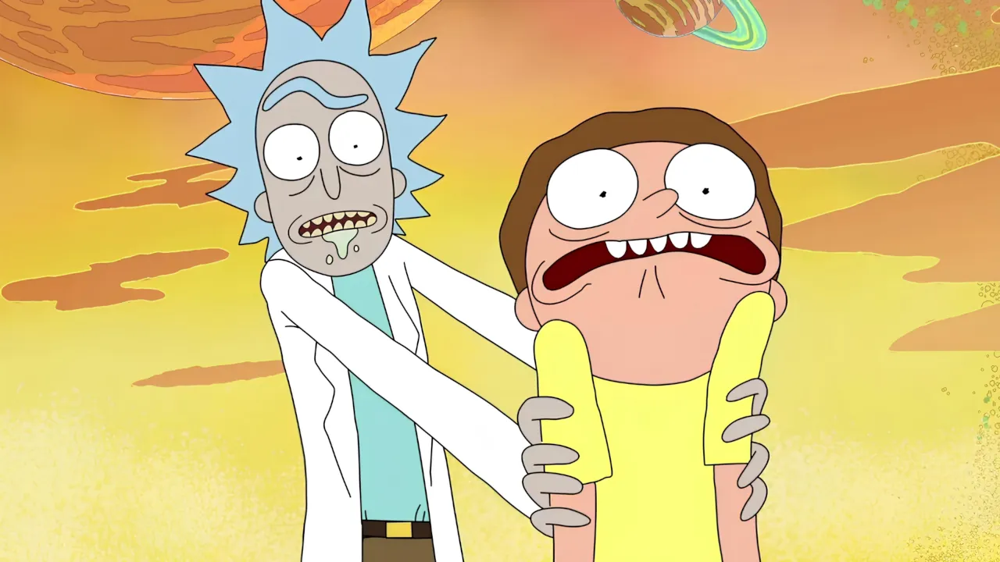

EXPLORAR TEMPORADAS

Rick leva seu neto Morty para outra dimensão para encontrar sementes para mega-árvores, enquanto Jerry e Beth discutem a influência de Rick sobre seu filho.
Rick ajuda Jerry com seu cachorro; Rick e Morty tentam interceptar os sonhos do Sr. Goldenfold.
Rick encolhe Morty e o injeta em um homem para salvar o Anatomy Park, enquanto Jerry tenta passar um Natal sem tecnologia.
Alienígenas simulam uma realidade alternativa para roubar a fórmula de Rick, enquanto Jerry tenta criar um slogan de marketing.
Rick oferece soluções para os problemas da família enquanto Morty lidera uma aventura própria.
Uma poção do amor se torna viral e transforma a Terra inteira, forçando Rick a criar uma solução extrema.
Morty vira pai de um bebê alienígena enquanto Rick e Summer enfrentam uma dimensão perigosa.
Rick desbloqueia canais de TV interdimensionais enquanto a família se distrai com outra invenção perigosa.
Summer trabalha em uma loja amaldiçoada enquanto Jerry cria problemas políticos em Plutão.
Uma associação de Ricks de universos alternativos visita a dimensão C-137 em busca do verdadeiro Rick.
Rick e Summer fazem uma festa intergaláctica enquanto Beth e Jerry tentam salvar o casamento.